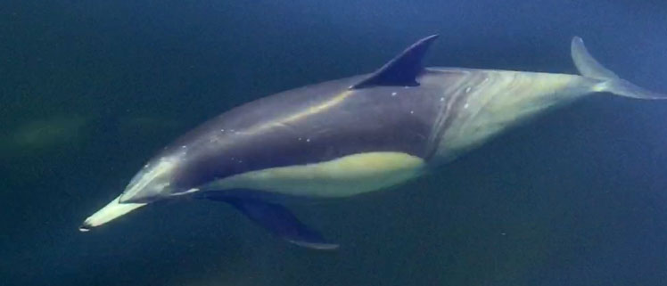

Dolphins off Herron Island, August 2016

The following video was taken by islander Kelly Fahlman from the ferry's 12:00 shuttle on August 11th. From Wikipedia's description, they appear to be short-beaked common dolphins. Click below for the short and long versions of Kelly's video.
Short clip (5 seconds, 3 MB)
Long clip (55 seconds, 33 MB)
|
|